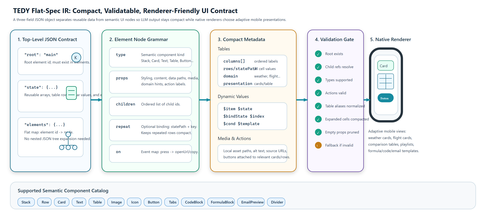
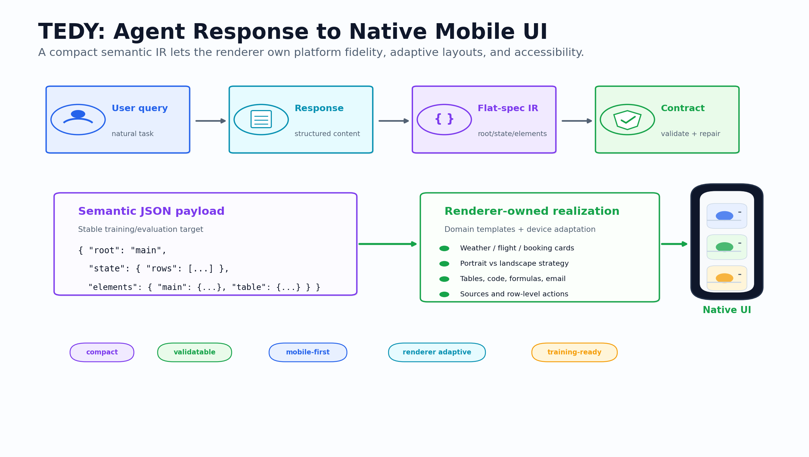
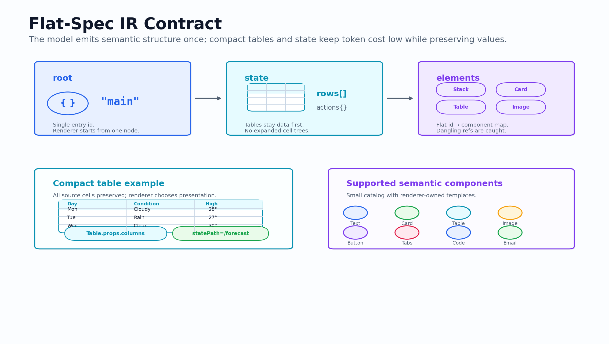
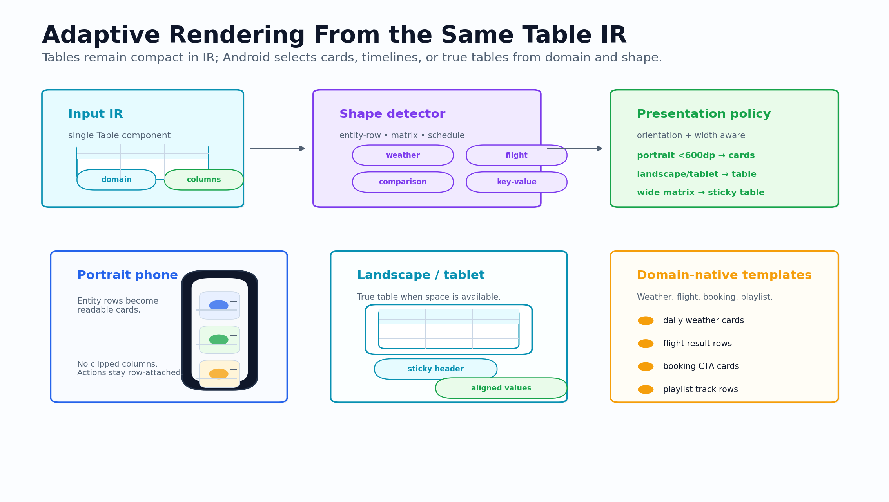
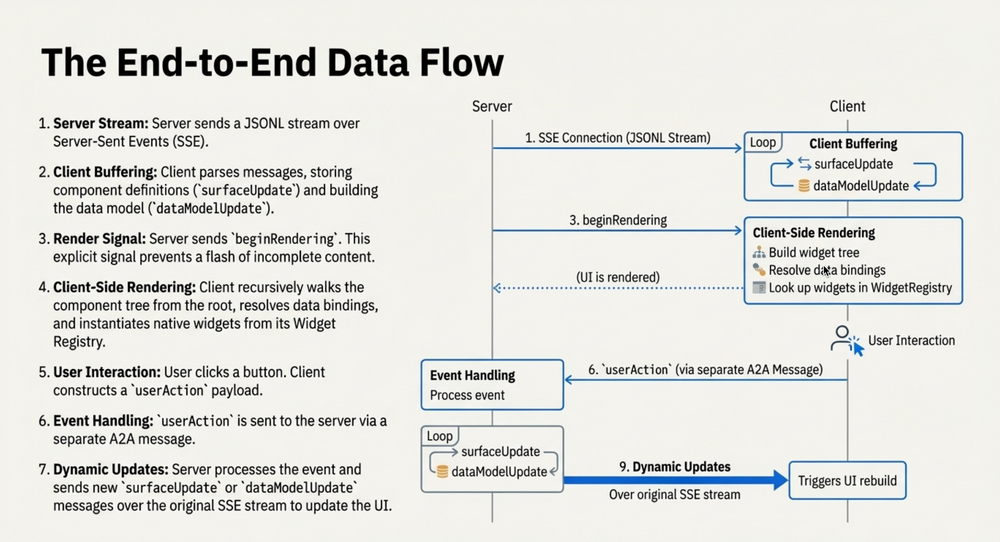
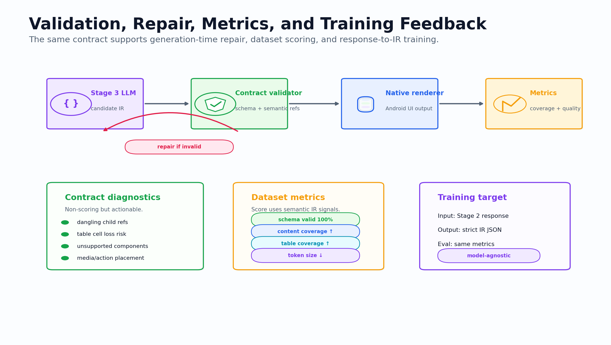
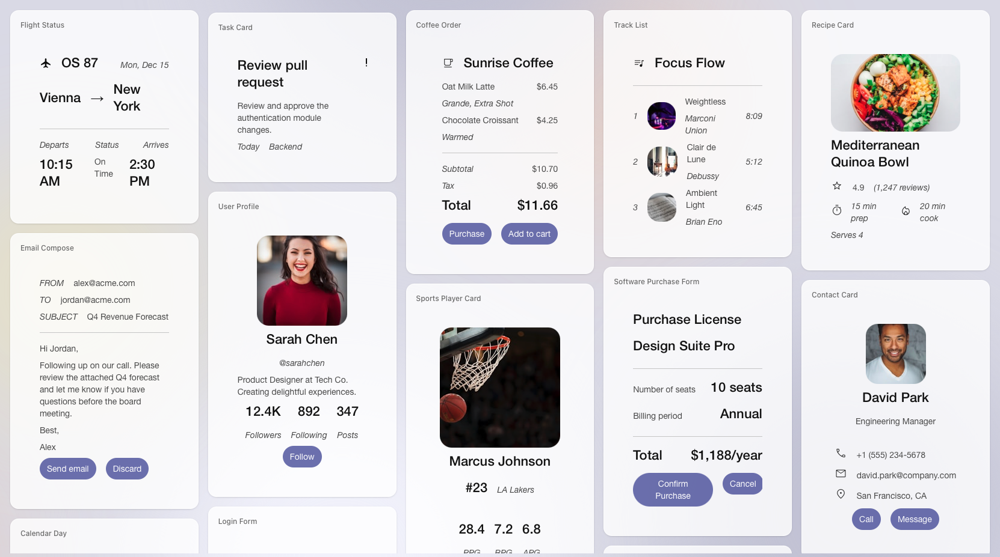
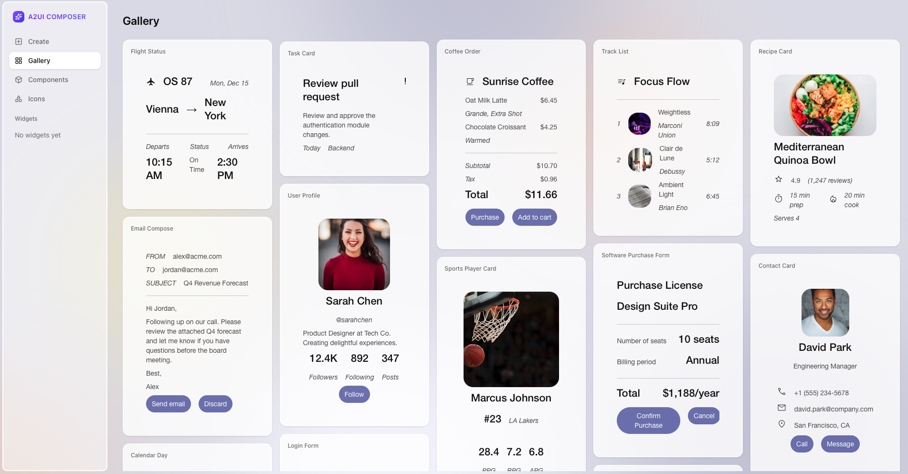

From LLM response to native mobile interface.
This project extends A2UI into a complete GenUI research and engineering stack: a compact flat-spec IR, a native Android renderer, dataset generation and metrics, Stitch-guided visual refinement, and response-to-IR model training.

Project outline
The explainer is organized around the concrete artifacts in this repo: docs, dataset pipeline, Android renderer, generated figures, and training code.
Text-only agents make UI-heavy tasks slow.
Agents can describe a booking form, weather card, comparison table, itinerary, or troubleshooting checklist in text, but users often need a structured interface: controls, cards, tables, images, sources, and actions.
- HTML or generated code is risky across trust boundaries.
- Plain text loses structure and makes actions hard to use.
- Nested JSON can become large and brittle for LLM generation.
Safe like data, expressive like UI.
The agent emits declarative JSON. The client validates the payload and renders it with a trusted component catalog. The UI feels native because the app owns the renderer, styling, accessibility, and action execution.
End-to-end project flow
The repo keeps generation, validation, rendering, and training as separable layers so each can be improved independently.

Architecture figure from the paper artifacts: query, response, IR generation, validation, renderer, metrics, and training feedback.
Query
Generate diverse user requests across task domains and constraints.
Response
Create rich grounded responses with assets, sources, tables, actions, and structure.
Flat IR
Convert response text into compact flat-spec GenUI JSON.
Render
Validate and render to phone-first native Android or web renderer outputs.
Evaluate
Score content coverage, table quality, actions, schema validity, and visual outputs.
The contract is intentionally small.
TEDY uses a flat element map plus a reusable state object. This keeps IR compact and makes validation deterministic.
{
"root": "main",
"state": {
"flights": [
{"airline": "IndiGo", "fare": "INR 5,488"}
]
},
"elements": {
"main": {
"type": "Stack",
"props": {"direction": "vertical"},
"children": ["title", "flightTable"]
},
"flightTable": {
"type": "Table",
"props": {
"columns": [...],
"statePath": "/flights",
"domain": "flight",
"preferredPresentation": "cards"
},
"children": []
}
}
}
Spec details
- root: the id of the root element to render.
- state: reusable data arrays, table rows, media metadata, and scalar values.
- elements: flat id-to-node map; nodes carry type, props, children, repeat, and on handlers.
- Table: stores columns and rows compactly while renderer chooses cards, timelines, or horizontal tables.
- Validation: resolves child refs, normalizes aliases, prunes empty props, and enforces fallback validity.

Flat-spec contract: structure, reusable state, element nodes, validation rules, and renderer-facing semantics.
Phone-first native rendering
The Android renderer maps semantic IR to adaptive UI patterns rather than blindly drawing a spreadsheet or generic card list.
Adaptive table routing
Tables stay compact in IR but render differently by domain and viewport: weather cards, flight cards, booking cards, playlist rows, feature matrices, schedule timelines, or horizontal scroll tables.
BLR to LKO Flights
Domain-specific card route
Weather Forecast
Daily cards with icon/image fallback
Source & Action
Buttons are attached near the relevant content.

Adaptive table rendering: compact table data becomes cards, timelines, sticky tables, or domain-specific templates.
Generation, assets, metrics, screenshots.
The dataset folder runs structured stages and writes auditable JSONL artifacts for every run.
Stage 1 / Query
Generates diverse user tasks across domains and intent buckets with constraints suitable for UI rendering.
Stage 2 / Response
Produces response text, tables, sources, actions, and media assets. Asset handling supports local icons and deferred downloads.
Stage 3 / IR
Converts responses to strict flat-spec JSON, validates schema, computes metrics, and records model/token metadata.
Stage 4 / Render
Renders IR to HTML/PNG or Android screenshots for visual review and dashboard integration.
Metrics
Tracks schema validity, content coverage, table/action/section coverage, markdown leakage, media presence, and overall score.
Golden sets
Golden50 and Stitch-guided references are used to compare visual quality and recover renderer/prompt regressions.

A2UI flow from agent generation to client rendering and user actions.
Response-to-IR models close the loop.
The training folder consumes completed dataset runs and trains local Stage 3 models without mixing training code into data generation.

Validation, metrics, and model training feedback loop.
Model-agnostic training flow
- Join Stage 2 responses with Stage 3 flat-spec IR by response id.
- Filter strict-valid IR before SFT data preparation.
- Train LoRA/QLoRA adapters through model-specific adapters.
- Evaluate JSON parse rate, schema pass rate, repair rate, coverage metrics, and overall score.
- Export compatible packages for Android and Edge Gallery-style local inference.
What users see
Rendered cards, forms, media, and actions are controlled by the trusted renderer, not by arbitrary LLM code.

Gallery of generated UI compositions.

A2UI widget builder and custom component workflow.